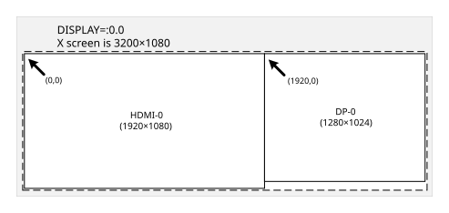

X Window System#
X Window System provides windowing, graphic display, and device management services to graphic user interface (GUI) applications that run under Linux. X server is the standard implementation of X Window System, and is supported in Jetson Linux.
The official X Window System documentation is available on the X.Org Foundation’s X.Org documentation page.
The lightdm or gdm3 service currently is not enabled by default.
Therefore, you must start X server manually. This differs from previous
releases, in which you could either start X server manually, or make it
run by default on the Ubuntu root file system started by lightdm or gdm3.
Starting X Server Manually#
To start X server#
Note
You can define the display configuration in xorg.conf before starting the server. After the server starts, use xrandr to set the runtime configuration. For more information, see
Using xrandr for Runtime Configuration.
Enter this command:
$ sudo -b X -ac -noreset -nolisten tcp
The command line arguments may vary depending on platform.
To stop X server#
To get the PID of X server, enter this command:
$ ps aux | grep "X"
Then enter this command:
$ sudo kill <pid>
Where <pid> is the PID displayed for X server by the first command.
Runtime Configuration#
X server provides several mechanisms for setting configuration and run-time parameters:
Command line options
Environment variables
The configuration files
xorg.confandxorg.conf.dAuto-detection
Fallback defaults
Jetson Linux provides utilities for changing the configuration and run-time parameters:
xrandr: A standard X server utility for setting display propertiesnvidia-xconfig: An NVIDIA tool that assists in configuringxorg.conf
Note
Customers who support hot plugging of an HDMI® display must implement an X11 client that reconfigures the HDMI display upon receipt of an RRScreenChangeNotify X11 event. Typically, a gnome-settings-daemon does this.
This solution is required to work around the X11 response to a hot-plugged HDMI display. X11 registers the HDMI output as connected but does not perform an automatic mode-set.
Using xrandr for Runtime Configuration#
The NVIDIA® Jetson™ X Driver supports the RandR 1.2 (X11
Rotate and Resize) extension. This extension allows dynamic enabling,
resizing, positioning, and orienting of displays. The xrandr
command line utility enables you to control RandR. That utility is included
in the x11-xserver-utils package. The drive-setup.sh installation script
installs that package.
Querying Supported Displays and Screen Resolutions#
You can use xrandr to get information about supported displays and
screen resolutions.
To query attached displays and detect available modes#
With X server running, enter this command:
$ xrandr
The output is similar to the following:
Screen 0: minimum 8 X 8, current 2560 X 1600, maximum 16384 X 16384
DP-0 connected primary 2560x1600+0+0 (normal left inverted right X axis y axis) 220mm X 140mm
2560x1600 60.0*+
HDMI-0 disconnected (normal left inverted right X axis y axis)
Obtaining Additional Help#
The xrandr utility provides a help menu that lists all supported options
and provides guidance on their use.
To get further help and view all available options#
Enter this command:
$ xrandr --help
Modifying the Static Configuration (Optional)#
The minimal xorg.conf is installed on the target at /etc/X11/xorg.conf.
Additionally, directories of *.conf fragment files are located in these locations:
/etc/X11/xorg.conf.d/
/usr/share/X11/xorg.conf.d/
By default, xorg.conf contains no specific settings for the screen
resolution, virtual desktop size, bit depth, and display select, but
instead queries the X driver for the optimum settings based on displays
enabled. The Jetson X Driver’s default settings, along with runtime
xrandr commands and X server command-line arguments, are meant to be
sufficient for most needs. In cases where they are not sufficient, you
can configure appropriate settings for screen resolution, bit depth, and
display enablement to create custom defaults. You may still use xrandr
for runtime manipulation.
Note
NVIDIA recommends that you use the nvidia-xconfig tool to edit the xorg.conf file, rather than edit it by hand. You may have to edit by hand in some circumstances, though.
Using nvidia-xconfig to Configure xorg.conf#
The NVIDIA X server configuration tool, nvidia-xconfig, simplifies the
task of modifying your xorg.conf file. It parses the file, saves a
backup, and modifies the configuration based on your choice of
command-line options.
Getting Help with nvidia-xconfig#
The nvidia-xconfig tool provides basic and advanced help.
To get help for nvidia-xconfig#
To get basic information about the tool, enter this command:
$ nvidia-xconfig --help
To get information about options for modifying xorg.conf, enter this command:
$ nvidia-xconfig --advanced-help
Specifying a Custom EDID for the Display#
The EDID (extended display identification data) is a collection of data in a display which lists its modes of operation (resolutions, refresh rates, etc.).
If X11 does not recognize the mode list of a particular model of
display, it may be because the display has an invalid EDID. In this case
the X driver cannot accurately determine the capabilities of the
display. You can correct this problem by using nvidia-xconfig to specify
a valid EDID.
To specify a custom EDID for the display#
Enter this command:
$ nvidia-xconfig --custom-edid=HDMI-<n>:<path>
Where:
<n>is the index of the HDMI display for which the custom EDID is defined. It is 0 for the first HDMI display, 1 for the second, etc.<path>is the complete path to a file that contains the custom EDID. The filetype of this file customarily is.bin.
Setting Color Bit-Depth#
You can use nvidia-xconfig to set color bit-depth in the xorg.conf file.
This makes X11 start with the specified color bit-depth.
To set color bit-depth#
Enter this command:
$ nvidia-xconfig --depth=<depth>
Where
<depth>is one of the following supported color bit-depth values: 8, 15, 16, 24, and 30.
For example:
$ nvidia-xconfig --depth=16
Specifying Modes#
Use nvidia-xconfig to set a display’s display mode (resolution) in xorg.conf.
To add a mode to the mode list#
In a terminal window, enter:
$ nvidia-xconfig -mode=<mode>
Where
<mode>is the display mode expressed as X and Y pixels. For example:$ nvidia-xconfig -mode="1024x768"
If the system has more than one display, you must specify the display
whose mode list is to be changed. Enter nvidia-xconfig --help for
information.
Enabling Debug Mode#
You can use nvidia-xconfig to enable debug mode in the xorg.conf file.
When debug mode is enabled, the X driver logs verbose details about mode
validation in the X server log file. You can use this information to
troubleshoot mode database issues.
To enable debug mode#
Enter this command:
$ nvidia-xconfig -mode-debug
To disable debug mode#
Enter this command:
$ nvidia-xconfig -no-mode-debug
Multi-Display X Server Layout#
Server layout refers to the number of displays attached to X server, which X screen each display appears on, and the position of each display on its X screen. For example, a server layout might specify that there are two displays, both of which map to one X screen, and display 1 is to the right of display 0 on the X screen.
For single-display systems, the default server layout is sufficient. For multi-display systems you must define your own server layout. NVIDIA X server current supports only a single X screen (a single virtual desktop) mapped to multiple displays.
The default configuration maps a different part of X screen to each display. You can also configure a mirrored layout, which maps the desktop or the same part of the desktop to more than one display. The size of the X screen is the smallest rectangle that covers all of the parts that are mapped to enabled displays.
To enable one X screen (default for span)#
Enter this command:
$ nvidia-xconfig -only-one-x-screen
This is an illustration of a one X screen configuration with a side-by-side layout:

This xrandr command specifies the layout shown above:
$ xrandr --output HDMI-0 --mode 1920x1080 --output DP-0 --mode 1280x1024 --right-of HDMI-0
To enable screen mirroring#
Enter this command:
$ nvidia-xconfig --metamode-orientation=clone
To enable screen spanning#
Enter this command:
$ nvidia-xconfig --metamode-orientation=<value>
Where <value> specifies the position of display n+1 on the X screen, relative to display n:
RightOf(the default)LeftOfAboveBelow
Configurations that Require Editing xorg.conf#
This section describes configuration changes for which you must modify configuration files with a text editor, such as enabling screen saver features, EDID polling, blending, and video overlays.
Enabling Screen Saver Features#
By default, X11 features for screen blanking and for suspending and disabling displays are all disabled. You can enable those features by editing this configuration file:
/etc/X11/xorg.conf.d/disable_screensaver.conf
Configuring EDID Polling and Native Resolution#
Instead of statically setting the resolution used in the configuration file, the X driver can poll the EDID modes and use each display’s native resolution (usually its highest resolution).
EDID polling is always enabled in the Jetson X Driver. By default, it detects only EDID modes (those reported by the display itself). You can define additional modes as described in Specifying Modes. Remove the added modes to use only modes reported by EDID.